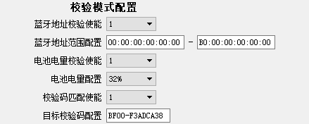
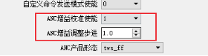
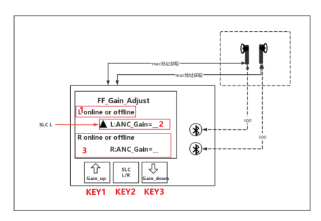
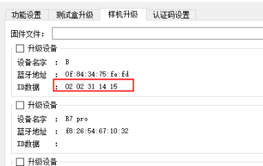
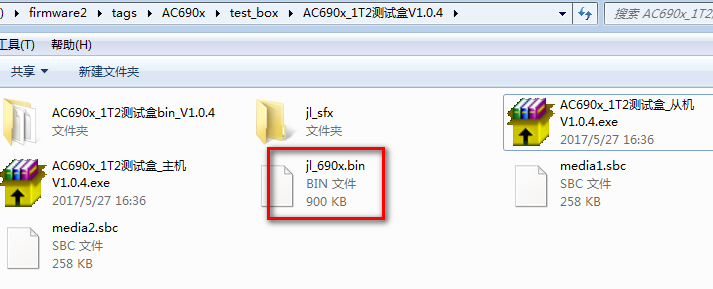
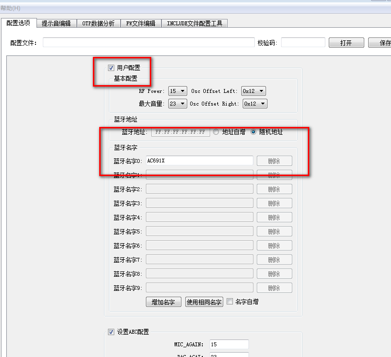
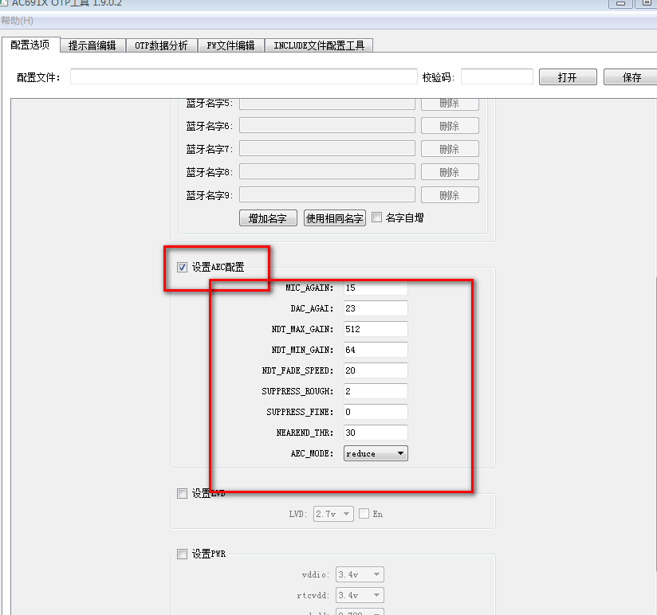

3.15. Other Common Features: Configuration and Use
3.15.1. Using the verification function in UART mode
V1.2.5.d added the configuration of verification mode over UART

V1.3.2 added Bluetooth name verification

To use this verification function, turn on "Test enable" (测试使能) under "Wired UART mode configuration" (有线串口模式配置) and turn off "Upgrade enable" (升级使能).
Set "0" to disable the corresponding test option.
Set "1" to enable the corresponding test function; the specific test criteria are set in the configuration box below it.
In this mode, when no device is online, the display shows the verification mode and the version number; when a device is online, it shows the test results.


In V1.3.2, the verification result display was changed: the upper line is fixed and the lower line is refreshed.


V1.2.5.d added the Bluetooth 2.4G access code setting
To use it, turn on DIP switch 6
When this value is "0", the default generic Bluetooth connection is used;
When this value is not "0", it is the configured pairing code.
3.15.2. Configuring and using the out-of-case in-ear trim function for earphones
Version V1.2.6 adds the out-of-case in-ear trim function

Set to 1 to enable this function; in-ear trim is then performed. This requires support in the corresponding SDK.

Set to 1 to enable this function; after pairing is complete, the earphones power off automatically when taken out of the charging case. This also requires support in the corresponding SDK.
3.15.3. Using earphone spatial audio calibration
Versions after V1.2.8.b support earphone spatial audio calibration (
this option requires SDK support)Set the test box calibration command: set "DUT command mode enable" (DUT命令模式使能) to 1 and "UART command configuration" (串口命令配置) to 01. This setting is mutually exclusive with all the other enable options under "Wired UART mode configuration" (有线串口模式配置).

Meaning of the UI display content
Display and prompt tone |
Meaning |
|---|---|
The test box beeps ("di") once and displays "trim run…" |
Calibration started |
Displays "trim run…" |
Calibrating |
The test box beeps ("di") twice and displays "trim succ !" |
Calibration succeeded |
The test box beeps ("di") three times and displays "trim fail !" |
Calibration failed |
3.15.4. Using ANC calibration
Versions after V1.2.8.g support ANC calibration (this option requires SDK support)
DIP switches 3, 4, 5 and 6 must be off, as shown below

In the PC tool, turn on "ANC gain calibration enable" (ANC增益校准使能), set the "ANC gain adjustment step" (ANC增益调整步进) value, keep "ANC product type" (ANC产品形态) at its default "tws_ff", and power-cycle the test box.

The connection diagram of the test box and the earphones and the ANC test screen are shown below

Screen and buttons: Screen:
1: shows the online status of the left earbud
2: shows the ANC digital gain of the left earbud
3: shows the online status and the ANC digital gain of the right earbud
The "▲" symbol in the figure indicates which earbud's ANC gain is currently being adjusted.
Buttons:
KEY1: press to increase the earbud's ANC digital gain
KEY2: press to select the left or right earbud; press and hold to unpair the current earbud pair
KEY3: press to decrease the earbud's ANC digital gain
Simply inserting a new pair of earphones also automatically unpairs the previous pair and automatically pairs the new pair.
Meaning of the UI error messages:
Display |
Cause |
|---|---|
ver err |
ANC version of the earphones not supported |
spp err |
The earphones do not support ANC |
cmd fail or cmd unf |
Communication error between the test box and the earphones |
timeout |
Communication timeout between the test box and the earphones |
3.15.5. Using TWS triple synchronization
Usage
V127b added the triple synchronization function. For TWS products that need to synchronize the triple, the pairing function must be enabled first; triple synchronization can only be performed after pairing is complete.
When TWS pairing is complete and "Triple sync enable" (三元组同步使能) is set to 1, the triple synchronization process starts. During the first synchronization, if one of the earbuds has no triple, "Sync complete" (同步完成) is displayed after the synchronization process; on subsequent power-ups, "Synced" (已同步) is displayed.
The "Triple forced sync enable" (三元组强制同步使能) function is intended for cases where both earbuds have a triple but the data differs. If this function is set to 1, the triple data of the earbud that has it stored in flash is synchronized to the other earbud, and the other earbud's previous data is overwritten. Use this function with caution.


Meaning of the UI display content
Display |
Meaning |
|---|---|
No triple (无三元组) |
The TWS devices contain triple information; when the TWS devices are connected over UART and this test function is enabled, "No triple" is displayed |
Programmed (已烧录) |
Triple information has already been programmed into the flash of each of the two TWS earbuds |
Sync complete (同步完成) |
One of the TWS earbuds has no triple information and the other has triple information in its flash; after the first programming is complete, "Sync complete" is displayed |
Synced (已同步) |
The triple has already been synchronized between the two TWS earbuds; apart from the first synchronization, every subsequent synchronization shows "Synced" |
Data mismatch (数据不一致) |
When the triple information in the two TWS earbuds differs and forced sync is not enabled, "Data mismatch" is displayed |
Sync failed (同步失败) |
When the triple information could not be synchronized because of a memory read/write operation, "Sync failed" (同步失败) is displayed |
3.15.6. Displaying custom advertising information in BLE mode
A function for displaying custom fields of BLE advertising packets has been added. The currently supported display field type is defined as 0xFE: the test box parses the data of type 0xFE defined in the advertising packet and sends it to the PC tool for display.
You need to generate the advertising packet content yourself in the corresponding SDK. Its maximum length is 16 bytes; anything beyond that is not displayed.
The ID data option is displayed as shown below:

3.15.7. Updating the test box audio files
Note
Name the two sbc audio files to be updated (the previous and next tracks) media1.sbc and media2.sbc, and put them in the same directory as AC690x_1T2测试盒_从机Vx.x.x.exe (if these two files are absent, the built-in default files are used).
Method 1: simply upgrade the test box slave firmware again. For the slave upgrade procedure, see method 1 in "Test Box Firmware Upgrade"; the master does not need to be upgraded.
Method 2: if media1.sbc and media2.sbc are in the directory, click AC690x_1T2测试盒_从机Vx.x.x.exe to generate jl_690x.bin in the directory (the prompt tones in this bin file have already been replaced with the new ones), then upgrade by following method 2 in "Test Box Firmware Upgrade".

3.15.8. Updated test box support for AC691X
Frequency offset calibration:
Set the DIP switches to enable the test box frequency offset calibration mode, then put the ext_app.bfu file (BLE and EDR use different ext_app.bfu files; make sure you use the right one) on a TF card and insert the card into the test box.
Note
1. If there is no ext_app.bfu file on the test box TF card, the frequency offset calibration result is not saved to the chip.
2. During frequency offset calibration, the TF card must not contain the jl_690x.bfu upgrade file; if it does, jl_690x.bfu takes priority and is used for an upgrade.
Upgrading the AC691X Bluetooth name (BLE and EDR use different jl_690x.bfu files; make sure you use the right one):
Open the configuration options with the otp.exe tool
Check the "User configuration" (用户配置) settings as shown below; if you do not need to update the AEC configuration, leave the "AEC configuration" (aec配置) option unchecked. Save the configuration as ac691x.cfg, put it in the bt_updata directory, and run the cfg_updata.bat tool to generate jl_690x.bfu for wireless upgrade with the test box.

aec_cfg upgrade:
Check the "AEC configuration" (AEC配置) settings as shown below; if you do not need to update the name configuration, leave the "User configuration" (用户配置) option unchecked. Save the configuration as ac691x.cfg, put it in the bt_updata directory and run the cfg_updata.bat tool to generate jl_690x.bfu. Then put the generated upgrade file jl_690x.bfu on a TF card and insert the card into the test box.

Note: the name and the AEC parameters can be updated at the same time. Check both "User configuration" (用户配置) and the "AEC configuration" (AEC配置) settings, and the generated bfu updates both at once. (Leave unchecked whatever does not need to be updated.)
BLE upgrade of flash-version chips is supported (only in v101_C and later)
Procedure:
A. Before a BLE upgrade, turn on the BLE enable switch;
B. Wireless upgrade is the same as the 2.1 upgrade: you can upgrade from an SD card or online from the PC. The procedure is the same as in Wireless Upgrade of Bluetooth Devices
C. For an upgrade from an SD card, rename jl_ac691x.bfu to updata.bfu; only then can the test box recognize it.